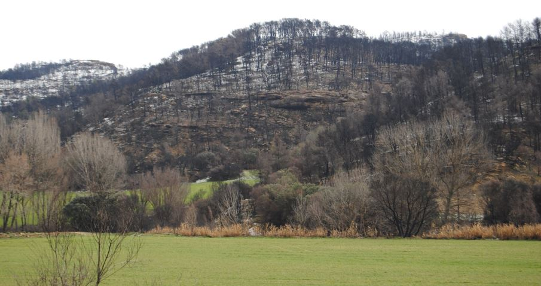
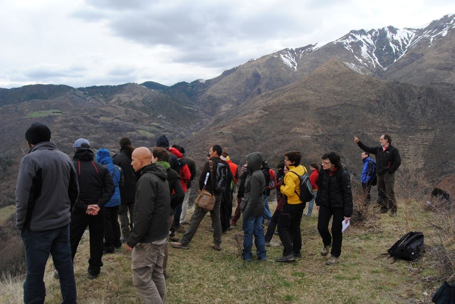

INCENDIOS FORESTALES
Caracterización de las trayectorias de recuperación
tras incendio en un gradiente de aridez
INTRODUCCIÓN DE LA LÍNEA DE TRABAJO DE INCENDIOS FORESTALES

Los incendios forestales tienen un impacto devastador en España, afectando gravemente a su biodiversidad, economía y población. Según datos del Ministerio para la Transición Ecológica y el Reto Demográfico, en 2020 se registraron más de 13.000 incendios, afectando a más de 74.000 hectáreas de media al año. Los grandes incendios forestales (>500 ha, GIF) no solo destruyen hábitats naturales, sino que también amenazan a la población y a las infraestructuras, causando pérdidas económicas muy graves en sectores como la agricultura, el turismo y la industria maderera. Los incendios forestales pueden dar como resultado tasas de erosión del suelo >20 Mg ha-1 y llegan hasta 370 Mg ha-1. Por tanto, los GIF son claramente uno de los temas de mayor preocupación con respecto a la desertificación en los ecosistemas forestales semiáridos de la Península Ibérica. La línea de trabajo de incendios forestales del proyecto DesFutur se orienta principalmente a evaluar el impacto que los GIF tienen sobre los ecosistemas terrestre y los procesos de desertificación, en particular a través de las medidas de restauración y gestión forestal para mitigar este grave problema.
Objetivos
Los objetivos específicos de esta línea de investigación están orientados a:
a) Evaluar espacial y temporalmente los procesos de cambios de la cubierta vegetal afectada por los GIF.
b) Desarrollar modelos, basados en teledetección, para el seguimiento los procesos de restauración de la vegetación y el impacto de las medidas correctoras.
c) Identificar los
principales impulsores ambientales de los procesos de restauración postincendio.
d) Relacionar dichos procesos con el riesgo de desertificación.
METODOLOGÍA
La metodología que se sigue para la evaluación del impacto de los GIF en los procesos de deserificación comprende tres pasos fundamentales:
- Preparación de una base de datos de GIF que han afectado al semiárido peninsular
- Desarrollar cartografía específica del cambio temporal de la vegetación a partir de series de imágenes de sensores multiespectrales y sensores LiDAR antes y después del incendio.
- Elaborar modelos predictivos de los procesos de respuesta postincendio y su relación con el riesgo de desertificación los datos de teledetección. Se usarán diferentes índices de vegetación (NDVI, NBR, etc).
- Integrar dicha información en modelos hidrológicos (TETIS y WiMMed) para comprender el impacto de los GIF en la erosión y la desertificación.
IMPACTO Y APLICACIONES PRÁCTICAS
Los estudios de restauración postincendio son fundamentales para la sociedad. En primer lugar, ayudan a comprender los efectos a largo plazo de los GIF sobre los ecosistemas, permitiendo desarrollar estrategias efectivas de restauración. Además, promueven alternativas de gestión para la regeneración de la vegetación, restaurando la biodiversidad y los servicios ecosistémicos vitales para la sociedad. Estos estudios también tienen un impacto económico significativo al contribuir a la prevención de desastres futuros y a la protección de recursos naturales valiosos.
LLAMADO A LA ACCIÓN
La línea de GIF y desertificación enfatiza dos problemáticas ambientales críticas: los incendios forestales y la desertificación, y busca aumentar el conocimiento para comprender la interconexión entre ambos fenómenos y cómo contribuyen al deterioro de los ecosistemas. Se busca implicar a todos los actores interesados en las medidas restauradoras a diferentes escalas temporales (inmediatamente después del fuego, y a corto, medio y largo plazo), la importancia de adoptar prácticas orientadas evitar la degradación del suelo. Las lecciones aprendidas de proyectos exitosos de restauración postincendio son una estrategia clave para recuperar la biodiversidad y la productividad del suelo., lo que requiere involucrar a diferentes actores sociales e institucionales en la toma de decisiones y el diseño y ejecución de estrategias de restauración postincendio y su relación con la desertificación.
Trabajos de campo Incendios Forestales
Taller
"TALLER SOBRE LOS GRANDES INCENDIOS FORESTALES Y LA DESERTIFICACIÓN"
En conjunto, el taller buscó promover una comprensión integral de las interrelaciones entre incendios forestales y la desertificación, fomentando el intercambio de las “lecciones aprendidas” sobre la restauración post incendio, pero buscando un marco abierto a la colaboración entre diferentes actores (ej., técnicos, científicos y académicos) para aportar nuevas ideas en el ámbito de los GIF y la lucha contra la desertificación.
Los resultados del Taller han quedado recogidos en un documento de trabajo que se puede consultar en los siguientes enlaces: